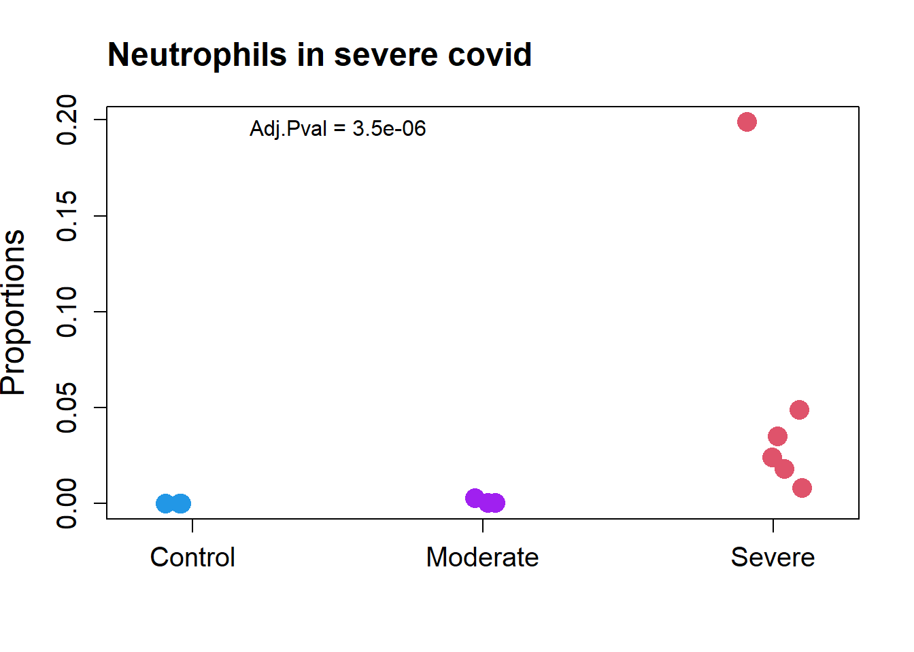
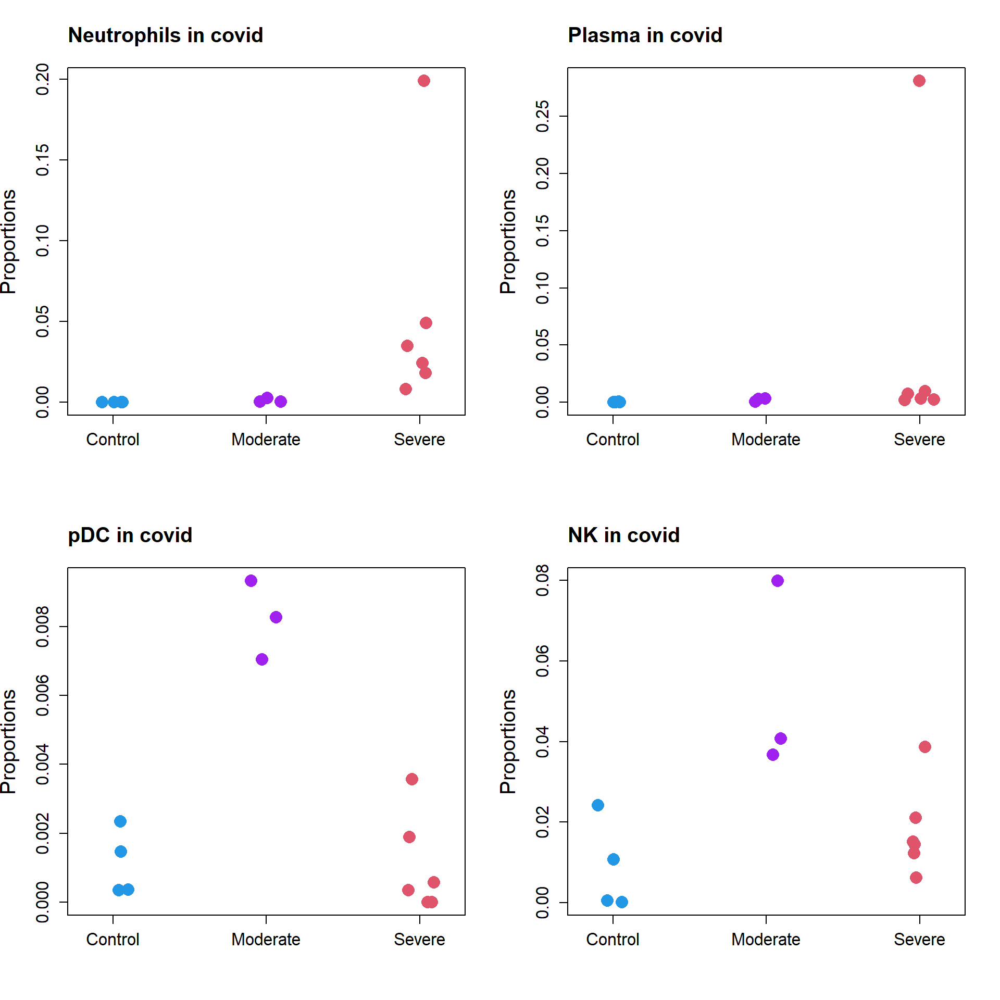

Application to real single cell RNA-seq datasets
Belinda Phipson
06/03/2022
Last updated: 2022-06-03
Checks: 7 0
Knit directory: propeller-paper-analysis/
This reproducible R Markdown analysis was created with workflowr (version 1.7.0). The Checks tab describes the reproducibility checks that were applied when the results were created. The Past versions tab lists the development history.
Great! Since the R Markdown file has been committed to the Git repository, you know the exact version of the code that produced these results.
Great job! The global environment was empty. Objects defined in the global environment can affect the analysis in your R Markdown file in unknown ways. For reproduciblity it’s best to always run the code in an empty environment.
The command set.seed(20220531) was run prior to running
the code in the R Markdown file. Setting a seed ensures that any results
that rely on randomness, e.g. subsampling or permutations, are
reproducible.
Great job! Recording the operating system, R version, and package versions is critical for reproducibility.
Nice! There were no cached chunks for this analysis, so you can be confident that you successfully produced the results during this run.
Great job! Using relative paths to the files within your workflowr project makes it easier to run your code on other machines.
Great! You are using Git for version control. Tracking code development and connecting the code version to the results is critical for reproducibility.
The results in this page were generated with repository version cf6f450. See the Past versions tab to see a history of the changes made to the R Markdown and HTML files.
Note that you need to be careful to ensure that all relevant files for
the analysis have been committed to Git prior to generating the results
(you can use wflow_publish or
wflow_git_commit). workflowr only checks the R Markdown
file, but you know if there are other scripts or data files that it
depends on. Below is the status of the Git repository when the results
were generated:
Ignored files:
Ignored: .Rhistory
Ignored: .Rproj.user/
Ignored: data/cold_warm_fresh_cellinfo.txt
Ignored: data/covid.cell.annotation.meta.txt
Ignored: data/heartFYA.Rds
Ignored: data/pool_1.rds
Untracked files:
Untracked: code/SimCode.R
Untracked: code/SimCodeTrueDiff.R
Untracked: code/auroc.R
Untracked: data/CTpropsTransposed.txt
Untracked: data/CelltypeLevels.csv
Untracked: data/TypeIErrTables.Rdata
Untracked: data/appnote1cdata.rdata
Untracked: data/cellinfo.csv
Untracked: data/nullsimsVaryN_results.Rdata
Untracked: data/sampleinfo.csv
Untracked: output/Fig1ab.pdf
Untracked: output/Fig1cde.pdf
Untracked: output/example_simdata.pdf
Untracked: output/fig2d.pdf
Untracked: output/legend-fig2d.pdf
Untracked: output/typeIerrorResults.Rda
Note that any generated files, e.g. HTML, png, CSS, etc., are not included in this status report because it is ok for generated content to have uncommitted changes.
These are the previous versions of the repository in which changes were
made to the R Markdown (analysis/RealDataAnalysis.Rmd) and
HTML (docs/RealDataAnalysis.html) files. If you’ve
configured a remote Git repository (see ?wflow_git_remote),
click on the hyperlinks in the table below to view the files as they
were in that past version.
| File | Version | Author | Date | Message |
|---|---|---|---|---|
| Rmd | cf6f450 | bphipson | 2022-06-03 | add real data analysis |
Introduction
We analysed three different publicly available single cell datasets to highlight the different types of models that can be fitted within the propeller framework.
- Young and old female and male PBMCs
- Huang, Zhaohao, Binyao Chen, Xiuxing Liu, He Li, Lihui Xie, Yuehan Gao, Runping Duan, et al. 2021. “Effects of Sex and Aging on the Immune Cell Landscape as Assessed by Single-Cell Transcriptomic Analysis.” Proceedings of the National Academy of Sciences of the United States of America 118 (33). https://doi.org/10.1073/pnas.2023216118.
- Healthy human heart biopsies across development
- Sim, Choon Boon, Belinda Phipson, Mark Ziemann, Haloom Rafehi, Richard J. Mills, Kevin I. Watt, Kwaku D. Abu-Bonsrah, et al. 2021. “Sex-Specific Control of Human Heart Maturation by the Progesterone Receptor.” Circulation 143 (16): 1614–28.
- Bronchoalveolar lavage fluid in a COVID19 dataset
- Liao, Mingfeng, Yang Liu, Jing Yuan, Yanling Wen, Gang Xu, Juanjuan Zhao, Lin Cheng, et al. 2020. “Single-Cell Landscape of Bronchoalveolar Immune Cells in Patients with COVID-19.” Nature Medicine 26 (6): 842–44.
Load libraries
library(speckle)
library(limma)
library(edgeR)
library(pheatmap)
library(gt)Young and old female and male PBMCs
sexCT <- read.delim("./data/CTpropsTransposed.txt", row.names = 1)
sexprops <- sexCT/100
sexcounts <- sexprops*174684/20
sampleinfo <- read.csv("./data/sampleinfo.csv", nrows = 20)
celltypes <- read.csv("./data/CelltypeLevels.csv")
group.immune <- paste(sampleinfo$Sex, sampleinfo$Age, sep=".")gt(data.frame(table(sampleinfo$Sex, sampleinfo$Age)), rownames_to_stub = TRUE, caption="Sample info")| Var1 | Var2 | Freq | |
|---|---|---|---|
| 1 | female | old | 5 |
| 2 | male | old | 5 |
| 3 | female | young | 5 |
| 4 | male | young | 5 |
c2.props.logit <- t(t(sexcounts+0.5)/(colSums(sexcounts+0.5)))
c2.logit.prop <- log(c2.props.logit/(1-c2.props.logit))designAS <- model.matrix(~sampleinfo$Age + sampleinfo$Sex)
fit.logit.c2 <- lmFit(c2.logit.prop, designAS)
fit.logit.c2 <- eBayes(fit.logit.c2, robust=TRUE)
summary(decideTests(fit.logit.c2)) (Intercept) sampleinfo$Ageyoung sampleinfo$Sexmale
Down 24 1 0
NotSig 0 22 24
Up 0 1 0topTable(fit.logit.c2, coef=2) logFC AveExpr t P.Value adj.P.Val B
CD8.Naive 1.6232449 -3.247755 4.565316 0.0001655915 0.003974195 0.8674723
CD16 -0.7143307 -3.725612 -3.538451 0.0019313526 0.023176231 -1.4795286
T-mito -0.4606184 -5.570899 -2.705649 0.0130970606 0.104776485 -3.2711944
INTER -0.3904241 -3.963488 -2.342644 0.0288651941 0.136903877 -3.9878182
CD4-CD8- 0.9610466 -4.129579 2.268932 0.0338557770 0.136903877 -4.1280803
TREG -0.2846572 -3.922781 -2.261672 0.0342259694 0.136903877 -4.1397512
CD14 -0.2617785 -1.996191 -1.750426 0.0943497196 0.323484753 -5.0169518
ABC -0.4831755 -5.933410 -1.530597 0.1406904913 0.419930732 -5.3435560
CD4.Naive 0.3295994 -2.095783 1.465576 0.1574740245 0.419930732 -5.4334259
MBC 0.2914029 -3.264982 1.338849 0.1948341805 0.420972299 -5.5993772topTable(fit.logit.c2, coef=3) logFC AveExpr t P.Value adj.P.Val B
PC -0.7424097 -5.443065 -3.166925 0.004618248 0.1108380 -1.977736
pre-DC 0.6745026 -8.220112 2.511013 0.020226075 0.2427129 -3.242963
CDC2 0.2612660 -4.373746 1.632579 0.117165640 0.6525306 -4.675749
NK2 0.3706612 -2.972199 1.511624 0.145428553 0.6525306 -4.839341
CD4-CD8- 0.6397062 -4.129579 1.510280 0.145769120 0.6525306 -4.841101
T-mito 0.2393400 -5.570899 1.405871 0.174095994 0.6525306 -4.973952
NK3 0.4437137 -2.747021 1.133550 0.269669984 0.6525306 -5.282921
NK1 0.2312700 -4.549216 1.116493 0.276735756 0.6525306 -5.300368
CD8.CTL -0.3477298 -2.453654 -1.113149 0.278136717 0.6525306 -5.303761
CDC1 0.3131922 -7.389070 1.090551 0.287740106 0.6525306 -5.326455par(mfrow=c(1,2))
stripchart(as.numeric(sexprops["CD8.Naive",])~group.immune,
vertical=TRUE, pch=c(8,16), method="jitter",
col = c(ggplotColors(20)[20],"hotpink",4, "darkblue"),cex=2,
ylab="Proportions", cex.axis=1.25, cex.lab=1.5,
group.names=c("F.Old","F.Young","M.Old","M.Young"))
title("CD8.Naive: Young Vs Old", cex.main=1.5, adj=0)
text(3.2,0.18, labels = "Adj.Pval = 0.004")
stripchart(as.numeric(sexprops["CD16",])~group.immune,
vertical=TRUE, pch=c(8,16), method="jitter",
col = c(ggplotColors(20)[20],"hotpink",4, "darkblue"),cex=2,
ylab="Proportions", cex.axis=1.25, cex.lab=1.5,
group.names=c("F.Old","F.Young","M.Old","M.Young"))
title("CD16: Young Vs Old", cex.main=1.5, adj=0)
text(2.2,0.049, labels = "Adj.Pval = 0.023")
Heart development analysis
heart.info <- read.csv(file="./data/cellinfo.csv", row.names = 1)
heart.counts <- table(heart.info$Celltype, heart.info$Sample)
trueprops <- rowSums(heart.counts)/sum(rowSums(heart.counts))
heart.info$Group <- NA
heart.info$Group[grep("f",heart.info$Sample)] <- "fetal"
heart.info$Group[grep("y",heart.info$Sample)] <- "young"
heart.info$Group[grep("a",heart.info$Sample)] <- "adult"
sample <- factor(heart.info$Sample, levels= paste(rep(c("f","y","a"), each=3),c(1:3),sep=""))
group <- factor(heart.info$Group, levels=c("fetal","young","adult"))grp <- factor(rep(c("fetal","young","adult"),each=3), levels=c("fetal","young","adult"))
sex <- factor(c("m","m","f","m","f","m","f","m","m"))prop.logit <- getTransformedProps(clusters = heart.info$Celltype, sample=sample,
transform = "logit")
dose <- rep(c(1,2,3), each=3)
des.dose <- model.matrix(~dose +sex)
des.dose (Intercept) dose sexm
1 1 1 1
2 1 1 1
3 1 1 0
4 1 2 1
5 1 2 0
6 1 2 1
7 1 3 0
8 1 3 1
9 1 3 1
attr(,"assign")
[1] 0 1 2
attr(,"contrasts")
attr(,"contrasts")$sex
[1] "contr.treatment"fit <- lmFit(prop.logit$TransformedProps,des.dose)
fit <- eBayes(fit, robust=TRUE)
topTable(fit,coef=2) logFC AveExpr t P.Value adj.P.Val
Immune cells 1.01359669 -2.4222033 4.2685426 0.0007551546 0.004980697
Erythroid -1.62960543 -7.8002460 -4.0140721 0.0012451742 0.004980697
Cardiomyocytes -0.91607837 -0.1936611 -3.4462160 0.0038586975 0.010289860
Fibroblast 0.62700537 -1.3756904 2.5326823 0.0236986525 0.047397305
Epicardial cells 0.29219063 -2.6566961 1.2026143 0.2487822518 0.398051603
Smooth muscle cells 0.18767427 -4.9125588 0.6717760 0.5125008180 0.603572791
Endothelial cells 0.13688475 -2.1652913 0.6467132 0.5281261918 0.603572791
Neurons -0.05626966 -4.1954452 -0.2315895 0.8201585898 0.820158590
B
Immune cells -0.3850285
Erythroid -0.8666233
Cardiomyocytes -1.9515138
Fibroblast -3.6607326
Epicardial cells -5.6855671
Smooth muscle cells -6.1705968
Endothelial cells -6.1872807
Neurons -6.3739773fit.plot <- lmFit(prop.logit$Proportions,des.dose)
fit.plot <- eBayes(fit.plot, robust=TRUE)par(mfrow=c(1,3))
stripchart(as.numeric(prop.logit$Proportions["Immune cells",])~grp,
vertical=TRUE, pch=16, method="jitter",
col = ggplotColors(4),cex=2,
ylab="Proportions",cex.axis=1.25, cex.lab=1.5)
title("Immune development", cex.main=1.5, adj=0)
abline(a=fit.plot$coefficients["Immune cells",1], b=fit.plot$coefficients["Immune cells",2], lty=2, lwd=2)
stripchart(as.numeric(prop.logit$Proportions["Cardiomyocytes",])~grp,
vertical=TRUE, pch=16, method="jitter",
col = ggplotColors(4),cex=2,
ylab="Proportions",cex.axis=1.25, cex.lab=1.5)
title("Cardiomyocyte development", cex.main=1.5, adj=0)
abline(a=fit.plot$coefficients["Cardiomyocytes",1], b=fit.plot$coefficients["Cardiomyocytes",2], lty=2, lwd=2)
text(2.6,0.77, labels = "Adj.Pval = 0.01")
stripchart(as.numeric(prop.logit$Proportions["Fibroblast",])~grp,
vertical=TRUE, pch=16, method="jitter",
col = ggplotColors(4),cex=2,
ylab="Proportions",cex.axis=1.25, cex.lab=1.5)
title("Fibroblast development", cex.main=1.5, adj=0)
abline(a=fit.plot$coefficients["Fibroblast",1], b=fit.plot$coefficients["Fibroblast",2], lty=2, lwd=2)
COVID data
covid <- read.delim("./data/covid.cell.annotation.meta.txt")output <- propeller(clusters=covid$celltype, sample=covid$sample_new, group=covid$group, transform="logit")
output BaselineProp PropMean.HC PropMean.M PropMean.S Fstatistic
Neutrophil 0.024417668 0.0000000000 0.001204431 0.055593846 34.5347175
Plasma 0.015817544 0.0002244276 0.002149909 0.050912723 8.7181367
pDC 0.002309574 0.0011342772 0.008209773 0.001065692 5.7852728
NK 0.016425326 0.0088943293 0.052465923 0.017978750 5.3912409
T 0.117241275 0.0945944806 0.325029563 0.137097435 3.1551241
mDC 0.014860286 0.0237761816 0.030831149 0.008875553 2.4842289
B 0.003342805 0.0035032662 0.012989518 0.004005391 2.3945864
Epithelial 0.053652014 0.1302459194 0.051903406 0.118455372 1.8134669
Macrophages 0.750869889 0.7352897831 0.512995844 0.604316237 1.6207397
Mast 0.001063620 0.0023373349 0.002220485 0.001699001 0.6920735
P.Value FDR
Neutrophil 3.546468e-07 3.546468e-06
Plasma 2.056673e-03 1.028336e-02
pDC 1.052218e-02 3.493472e-02
NK 1.397389e-02 3.493472e-02
T 6.468749e-02 1.293750e-01
mDC 1.090338e-01 1.673738e-01
B 1.171617e-01 1.673738e-01
Epithelial 1.901866e-01 2.377332e-01
Macrophages 2.239111e-01 2.487901e-01
Mast 5.127128e-01 5.127128e-01props.covid <- getTransformedProps(clusters=covid$celltype, sample=covid$sample_new,
transform="logit")par(mfrow=c(1,1))
grp.covid <- rep(c("Control","Moderate","Severe"), c(4, 3, 6))
stripchart(as.numeric(props.covid$Proportions["Neutrophil",])~grp.covid,
vertical=TRUE, pch=16, method="jitter",
col = c(4,"purple",2),cex=2,
ylab="Proportions",cex.axis=1.25, cex.lab=1.5)
title("Neutrophils in severe covid", cex.main=1.5, adj=0)
text(1.5,0.195, labels = "Adj.Pval = 3.5e-06")
All significant cell types
par(mfrow=c(2,2))
stripchart(as.numeric(props.covid$Proportions["Neutrophil",])~grp.covid,
vertical=TRUE, pch=16, method="jitter",
col = c(4,"purple",2),cex=2,
ylab="Proportions",cex.axis=1.25, cex.lab=1.5)
title("Neutrophils in covid", cex.main=1.5, adj=0)
stripchart(as.numeric(props.covid$Proportions["Plasma",])~grp.covid,
vertical=TRUE, pch=16, method="jitter",
col = c(4,"purple",2),cex=2,
ylab="Proportions",cex.axis=1.25, cex.lab=1.5)
title("Plasma in covid", cex.main=1.5, adj=0)
stripchart(as.numeric(props.covid$Proportions["pDC",])~grp.covid,
vertical=TRUE, pch=16, method="jitter",
col = c(4,"purple",2),cex=2,
ylab="Proportions",cex.axis=1.25, cex.lab=1.5)
title("pDC in covid", cex.main=1.5, adj=0)
stripchart(as.numeric(props.covid$Proportions["NK",])~grp.covid,
vertical=TRUE, pch=16, method="jitter",
col = c(4,"purple",2),cex=2,
ylab="Proportions",cex.axis=1.25, cex.lab=1.5)
title("NK in covid", cex.main=1.5, adj=0)
sessionInfo()R version 4.2.0 (2022-04-22 ucrt)
Platform: x86_64-w64-mingw32/x64 (64-bit)
Running under: Windows 10 x64 (build 22000)
Matrix products: default
locale:
[1] LC_COLLATE=English_United States.utf8
[2] LC_CTYPE=English_United States.utf8
[3] LC_MONETARY=English_United States.utf8
[4] LC_NUMERIC=C
[5] LC_TIME=English_United States.utf8
attached base packages:
[1] stats graphics grDevices utils datasets methods base
other attached packages:
[1] gt_0.6.0 pheatmap_1.0.12 edgeR_3.38.1 limma_3.52.1
[5] speckle_0.99.0 workflowr_1.7.0
loaded via a namespace (and not attached):
[1] backports_1.4.1 plyr_1.8.7
[3] igraph_1.3.1 lazyeval_0.2.2
[5] sp_1.4-7 splines_4.2.0
[7] BiocParallel_1.30.2 listenv_0.8.0
[9] scattermore_0.8 GenomeInfoDb_1.32.2
[11] ggplot2_3.3.6 digest_0.6.29
[13] htmltools_0.5.2 fansi_1.0.3
[15] checkmate_2.1.0 magrittr_2.0.3
[17] memoise_2.0.1 tensor_1.5
[19] cluster_2.1.3 ROCR_1.0-11
[21] globals_0.15.0 Biostrings_2.64.0
[23] matrixStats_0.62.0 spatstat.sparse_2.1-1
[25] colorspace_2.0-3 blob_1.2.3
[27] ggrepel_0.9.1 xfun_0.31
[29] dplyr_1.0.9 callr_3.7.0
[31] crayon_1.5.1 RCurl_1.98-1.6
[33] jsonlite_1.8.0 org.Mm.eg.db_3.15.0
[35] progressr_0.10.0 spatstat.data_2.2-0
[37] survival_3.3-1 zoo_1.8-10
[39] glue_1.6.2 polyclip_1.10-0
[41] gtable_0.3.0 zlibbioc_1.42.0
[43] XVector_0.36.0 leiden_0.4.2
[45] DelayedArray_0.22.0 SingleCellExperiment_1.18.0
[47] future.apply_1.9.0 BiocGenerics_0.42.0
[49] abind_1.4-5 scales_1.2.0
[51] DBI_1.1.2 spatstat.random_2.2-0
[53] miniUI_0.1.1.1 Rcpp_1.0.8.3
[55] viridisLite_0.4.0 xtable_1.8-4
[57] reticulate_1.25 spatstat.core_2.4-4
[59] bit_4.0.4 stats4_4.2.0
[61] htmlwidgets_1.5.4 httr_1.4.3
[63] RColorBrewer_1.1-3 ellipsis_0.3.2
[65] Seurat_4.1.1 ica_1.0-2
[67] scuttle_1.6.2 pkgconfig_2.0.3
[69] uwot_0.1.11 sass_0.4.1
[71] deldir_1.0-6 locfit_1.5-9.5
[73] utf8_1.2.2 tidyselect_1.1.2
[75] rlang_1.0.2 reshape2_1.4.4
[77] later_1.3.0 AnnotationDbi_1.58.0
[79] munsell_0.5.0 tools_4.2.0
[81] cachem_1.0.6 cli_3.3.0
[83] generics_0.1.2 RSQLite_2.2.14
[85] ggridges_0.5.3 evaluate_0.15
[87] stringr_1.4.0 fastmap_1.1.0
[89] yaml_2.3.5 goftest_1.2-3
[91] org.Hs.eg.db_3.15.0 processx_3.5.3
[93] knitr_1.39 bit64_4.0.5
[95] fs_1.5.2 fitdistrplus_1.1-8
[97] purrr_0.3.4 RANN_2.6.1
[99] KEGGREST_1.36.0 sparseMatrixStats_1.8.0
[101] pbapply_1.5-0 future_1.26.1
[103] nlme_3.1-157 whisker_0.4
[105] mime_0.12 compiler_4.2.0
[107] rstudioapi_0.13 plotly_4.10.0
[109] png_0.1-7 spatstat.utils_2.3-1
[111] statmod_1.4.36 tibble_3.1.7
[113] bslib_0.3.1 stringi_1.7.6
[115] highr_0.9 ps_1.7.0
[117] rgeos_0.5-9 lattice_0.20-45
[119] Matrix_1.4-1 vctrs_0.4.1
[121] pillar_1.7.0 lifecycle_1.0.1
[123] spatstat.geom_2.4-0 lmtest_0.9-40
[125] jquerylib_0.1.4 RcppAnnoy_0.0.19
[127] data.table_1.14.2 cowplot_1.1.1
[129] bitops_1.0-7 irlba_2.3.5
[131] GenomicRanges_1.48.0 httpuv_1.6.5
[133] patchwork_1.1.1 R6_2.5.1
[135] promises_1.2.0.1 KernSmooth_2.23-20
[137] gridExtra_2.3 IRanges_2.30.0
[139] parallelly_1.31.1 codetools_0.2-18
[141] MASS_7.3-57 assertthat_0.2.1
[143] SummarizedExperiment_1.26.1 rprojroot_2.0.3
[145] SeuratObject_4.1.0 sctransform_0.3.3
[147] S4Vectors_0.34.0 GenomeInfoDbData_1.2.8
[149] mgcv_1.8-40 parallel_4.2.0
[151] beachmat_2.12.0 rpart_4.1.16
[153] grid_4.2.0 tidyr_1.2.0
[155] DelayedMatrixStats_1.18.0 rmarkdown_2.14
[157] MatrixGenerics_1.8.0 Rtsne_0.16
[159] git2r_0.30.1 getPass_0.2-2
[161] Biobase_2.56.0 shiny_1.7.1